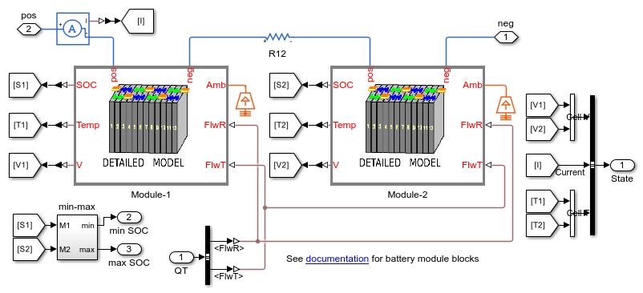
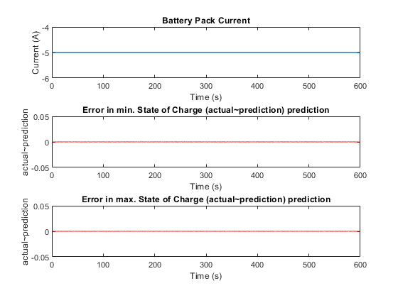

Battery Management System
This example shows how to model a battery management system for the state of charge estimation. The battery pack comprises of two battery modules, which are combinations of cells in series and parallel. The Battery (Table-Based) Simscape Electrical™ block models each battery cell. In this example, all cells have the same initial temperature and state of charge, but different resistance. The state of each cell is estimated using battery pack current and the measured cell voltages.
Contents
Model Overview
This example models a battery pack connected to an auxiliary power load due to the coolant pump. The BMS subsystem defines the required amount of the coolant flowrate to cool the high voltage (HV) battery pack. A controlled current source defines the DC current demand from the HV battery pack. To calculate the state of charge for the battery pack, the BMS subsystem uses the cell voltages and temperature, and the battery pack current. The cell capacity does not change with time or cycling and is the same for all the cells.
Battery Cell Overview
The battery cell is modeled using the equivalent circuit method. You can find the equivalent circuit parameters used for each cell in the Battery_Management_System_param.m initialization file . To characterize a lithium-ion cell, this example uses a 1-RC model by setting the charge dynamics parameter to One time-constant dynamics. This example does not consider cell capacity fade or charge leakage.
Build Battery Pack
The Battery Pack comprises of 2 series connected Battery Modules. Each module consists of 10 series connected Pouch type cells. The value of the terminal resistance, R0, in the first cell of the first module is 5% higher than the value of terminal resistance in the other cells. The value of the terminal resistance, R0, in the third cell of the second module is 3% lower than the value of R0 in the other cells. The Battery_Management_System_param.m file sets this scenario by specifying iniR01(1,1) to 1.05 and iniR02(1,3) to 0.97.
Define Battery Management System
The BMS subsystem calculates the battery state of charge and controls the coolant flowrate. The coolant pump power loss is calculated based on the value at the FlwR input port, with 500W being the maximum pump power consumption. This example uses the extended Kalman-Filter (EKF) in the SOC estimation subsystem to calculate the state of charge.
Define Battery State-of-Charge Estimation
To calculate the state of charge, the EKF uses the pack current, cell voltages, and temperature data. The SOC estimation subsystem also implements a lookup table to define the cell model. The EKF reduces the error between the prediction and measurement of the cell voltages.
Simulation Results
This figure shows the simulation results with the parameters defined in the Battery_Management_System_param.m file. The cell voltages are different for the cells with different resistance R0. The BMS accurately tracks the state of charge of all cells.
